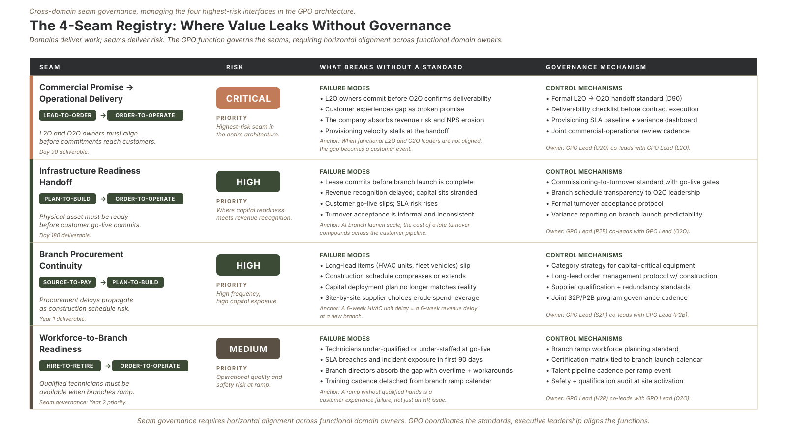

Part 3 of the "How Would You Build It?" series · by Jeffrey Benson
If you've spent any time inside process improvement, you've watched teams pour effort into making each step better: faster, cleaner, more consistent. That work matters, and there's real value to recover inside almost every process; I'll come back to that before the end. But after enough years of this, I've learned where to look first, and it's the place almost everyone walks right past:
The seams between the boxes, where work crosses from one domain into another and nobody owns the crossing.
The work within a domain is usually done by people who are good at it, and its inefficiencies are at least visible to someone who owns that box. The procurement team knows procurement. The sales team knows sales. The branch crews know how to deliver. The handoffs are different: they belong to no one, so they fail quietly.
Risk
The seams that cost the most
At Meridian Field Services, four handoffs carry most of the risk in the whole operating model. None of them lives inside a single domain. All of them are where one team's output becomes another team's problem.
- Lead-to-Order → Order-to-Operate. This is the critical one. Sales makes a commitment on scope, timing, and price; operations has to deliver against it. When those two aren't synchronized by a shared standard, the customer experiences the gap as a broken promise, at the exact moment of highest commitment. A deal that looked great on Friday becomes an operational scramble on Monday.
- Plan-to-Build → Order-to-Operate. A new branch or a new line of capacity has to be genuinely ready, not just "open," before operations commits it to customers. When readiness and commitment aren't synchronized, you've sold something you can't yet deliver.
- Source-to-Pay → Plan-to-Build. Procurement timing quietly becomes construction schedule risk. A part that arrives three weeks late doesn't show up as a procurement metric; it shows up as a missed build date, and the build team takes the blame for a seam they didn't own.
- Hire-to-Retire → Order-to-Operate. The skilled-technician pipeline either does or doesn't match the ramp of new contracts. Win the work without the certified people to staff it, and the seam becomes the constraint on growth itself.
Notice the pattern. In every case, the failure is invisible from inside either domain. Each side did its job. The work still failed, because the crossing had no owner.
Structure
Why seams get orphaned
This isn't carelessness; it's structural. Org charts are vertical. Every leader is accountable for their own box and measured on their own box's performance. So everyone, rationally, optimizes their box. The seam between two boxes belongs to neither budget, neither scorecard, neither leader.
It's the organizational equivalent of the strip of grass between two neighbors' yards that neither one mows. Not because anyone's negligent, but because it was never anyone's job.
And here's the trap: when a seam fails, the instinct is to go fix the boxes on either side. Tighten sales. Tighten operations. But the boxes weren't the problem. The crossing was. You can perfect both domains and still leak value at the handoff between them, because the handoff was never the target.
Governance
Governing the seams is the real job
This is where a Global Process Owner earns the title. Managing the seams is not the responsibility of any single domain owner, by definition; it sits above them. It belongs to the function that can see the whole horizontal flow.
What does governing a seam actually look like? A seam standard is simpler than it sounds. It's a shared, written agreement about three things:
1. What crosses the boundary (the specific output, defined the same way on both sides).
2. What "ready" means (the conditions that have to be true before the handoff is allowed to happen).
3. Who confirms it (a named person or check on each side, so the crossing is an event, not an assumption).
For the Lead-to-Order to Order-to-Operate seam at Meridian, that's a transition standard: a deal isn't "closed" until operations has confirmed it can deliver what sales committed, on the timeline sales promised. It's not bureaucracy. It's the difference between a promise and a guess.
Build that for the two or three highest-risk seams, and you've done more for the business than perfecting any single domain ever could.
Tooling
Making the seams visible
There's a reason seams stay invisible: most process documentation draws the boxes and leaves the arrows between them vague. "And then it goes to operations" is not a handoff; it's a hope.
This is exactly what I want instrumented in the tool I'm building alongside this series (working name: Forester). Every handoff becomes a traceable connection in the model, with the output, the readiness condition, and the owner attached to it, rather than an assumption living in someone's head. When the seams are explicit data instead of tribal knowledge, you can finally see, and govern, the places value actually leaks. A registry of seams turns out to be one of the most valuable artifacts a process function can hold.

The Seam Registry: Documenting, measuring, and assigning accountability to the cross-domain boundaries where organizational handoffs occur.
Prioritization
Seams first, not seams only
Let me be honest about a trap in my own argument: looking at the seams first is not the same as looking only at the seams. The handoffs are where you recover value fastest, because they're orphaned and cross-cutting, and a single seam standard can pay off across the whole business in weeks. But there is usually at least as much value buried inside each end-to-end process, in the ordinary forms of waste: redundant steps, rework loops, defects, and the quiet sprawl of too many systems doing overlapping jobs.
I learned how much hides in there on an enterprise IT asset-management process earlier in my career. Working alongside the teams who ran it, we decomposed the process to real depth, four levels everywhere and six where it was warranted, across roughly 400 activities. What surfaced was sobering: around 200 distinct forms of waste, 110 handoffs, and 64 different systems and tools all touching the same process. None of that was visible from the top. It only appeared once we went deep enough to see it.
The redesign that followed cut roughly a third of the handoffs and more than 40% of the steps, and pulled cycle time down by over 80%, from about seventeen weeks to under three. Most of the hard-dollar savings came from decommissioning redundant systems and retiring them off their hardware and software maintenance contracts, and the result landed well past the target the program had been given. The point isn't the figures; it's where they came from. That value was inside the process, invisible until someone decomposed it far enough to find it.
So the sequence I'd run is straightforward: govern the seams first for the fast, cross-cutting wins, then go domain by domain into the boxes for the deeper waste. The seams buy you credibility quickly; the within-process work is where the larger, slower pool of value usually lives. A process function that only ever looks at the handoffs is leaving most of the money on the floor.
So here's the question I'd leave you with: in your organization, what's the single most expensive handoff, the one where one team's "done" becomes another team's "wait, what?" Almost everyone has a candidate the moment they're asked. And once you've named it, ask the harder question right behind it: how much more is hiding inside the processes on either side? I'd like to hear what comes to mind, because naming the leak is the first step to finally giving it an owner.
Next in the series: Part 4, on building the team that does this work, and why the answer is senior, lean, and AI-native by design.
Sources: Independent research on Process Excellence and Global Process Ownership (GPO) framework deployments. Practical applications of standard work, organizational design, and continuous improvement metrics in high-growth rollups.